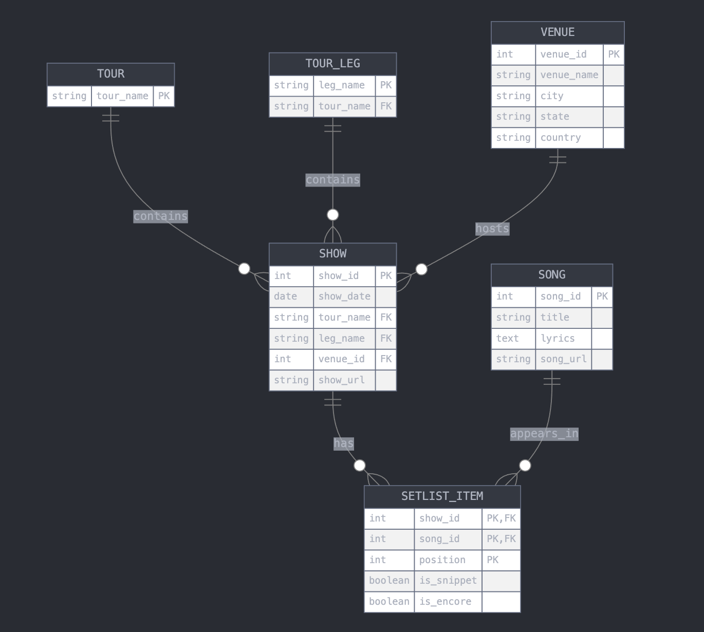

Data Preparation
Source of the data
In the online U2 community there is an excellent resource that has detailed information of all the concerts U2 ever played live, starting in their kitchen and high school in the late seventies in Dublin, Ireland, and evolving into world-wide tours with packed stadiums. This resource is u2gigs.com, created and maintained by Matthias Mühlbradt and André Axver. For my Capstone Project of the Google Data Analytics certification I asked for permission to use the data and this was kindly granted by Matt. Thank you very much!
Matt kindly offered to provide me with a database dump, but I decided to practice my coding skills and developed a web scraping approach that collected the data from the u2gigs.com site. The code for the web scraping is not shared here in my GitHub repository to avoid potential misuse of the code. I do explain the approach with a high-level outline of the methodology.
Data structure
To answer the questions I had asked myself at the beginning of this project, I decided that I needed to collect the following data fields from u2gigs.com:
- showID: the ID for this show as used on u2gigs.com
- tour: the name of the U2 tour the show was part of (e.g. U2 ZOO TV Tour)
- leg: the name of the tour leg the show was part of (e.g. ZOO TV 1st leg: North America)
- date: the date when the show took place
- venue: the name of the stadium, arena, pub, school or other type of venue where the concert took place (e.g Madison Square Garden)
- city: the city where the show took place (e.g New York)
- state: the state where the show took place (e.g New York)
- country: the country where the show took place (e.g USA)
- song_position: the position in the show set list when this song was played (e.g. 1 for the opening song)
- snippet: a boolean indicating if this was a regular song, or if it was just a song snippet inserted before or after a regular song (e.g. TRUE or FALSE)
- encore: a boolean indicating if this song was played in the main set list or in the encore, after the band took a short break (e.g. TRUE or FALSE)
- song_title: the title of the song (e.g. Sunday Bloody Sunday)
- show_url: the URL to the show info on u2gigs.com
- song_url: the URL to the song info on u2gigs.com
- song_lyrics: the lyrics of the song (e.g. ‘I can’t believe the news today, I can’t close my eyes and make it go away…..’)
For this project I decided to work with one aggregated data files containing all this information. From a data management perspective, it would be wiser to structure the data into different levels, and then these different levels would be linked to each other, like in a relational database with primary and foreign keys. I posed a question to Claude.AI to come up with a possible database scheme, and it provided the following possible Entity Relationship Diagram in mere seconds:

Web scraping methodology
On u2gigs.com each show has a web page, and each song ever played has a web page. The earliest show available is from 1976 when U2 played at their Mount Temple Comprehensive School in Dublin. The last show available at the time of this project was in the Sphere in Las Vegas on March 2, 2024. The outline of the scraping approach can be seen below. For details feel free to reach out to me.
- iterate over all the U2 show pages at u2gigs.com (starting with showID 1 all the way to showID 2307)
- check if page returns a result and skip to next one if needed
- retrieve the show meta data:
- tour
- leg
- date
- venue
- city
- state
- country
- retrieve and iterate over all list items from the html
- check if a song is present in this item
- check if this is a regular song or a snippet
- check if we are in the encore part of the show or not
- properly deal with songs that are played more than once in this show
- store song page URL for later
- capture position of song in set list
- if there was no set list for this show
- store show meta-data and fill NA for song related fields
- skip to next show
- iterate over all detected songs
- connect to the song page URL to retrieve song info:
- song_title
- song_lyrics
- deal properly with song pages that do not contain lyrics
- remove line break HTML codes before storing the lyrics
- write all captured show and song data to file
- connect to the song page URL to retrieve song info:
- wait 10 seconds before connecting to the next show page to avoid overloading u2gigs.com with requests
- display some stats:
- Number of shows processed
- Number of shows without setlist
- Number of regular songs processed
- Number of song snippets processed
Scraping code challenges and opportunities
- After having scraped all the required data I realized that my code was unnecessarily connecting multiple times to the song pages, every time it appeared in a show set list. It would have been better to store the song info in a separate data frame or file, so that the code would only connect to each song web page once.
- The approach to iterate over list items for song detection, and checking the full page html content for encore detection (because the encore word was not inside list items) was cumbersome, especially if songs were played more than once in a show. I included some workarounds in the code but data verification needed to be done to check if there were perhaps shows where the encore flag was not properly set for songs. For example, during the Popmart Tour the encore usually started with the Lemon Perfecto Mix which was not linked to a song page. The different code caused an issue, but I wrote a workaround specifically for that.
- Snippet detection required quite some trial and error, because some songs have a snippet at the start, others at the end, some songs have only one snippet, others more than one. Eventually I could capture all of that that correctly.
- The song_lyrics field resulted in many issues when loading the file into R. With hindsight, it would have been better to clean up that string before writing it to the data file.
- The scraping of the u2gigs.com site (with permission) took several hours, and eventually I had to complete it in 3 runs of the code. However, this resulted in the final merged data file having some songs duplicated for one concert. I discovered this while analyzing most played songs, as described on the the Basic Statistics U2 Concerts page. With hindsight, I should have checked the 3 partial data files before merging these.
- The ‘Top 25 show opening songs’ listed at https://www.u2gigs.com/tourdb-stats.html seem to be outdated. More details in my project report on the Basic Statistics U2 Concerts page.
- As described on the Basic Statistics U2 Concerts page in this report, there were some set lists where u2gigs.com did not count songs as opening songs if these were preceded by an interview (shows during promo tours). My code did count those as opening songs, hence some discrepancies in numbers.
- Also described on the Basic Statistics U2 Concerts page is a rare example of a set list that started with a medley of two regular songs (not snippets). My scraping code did not handle such case(s) properly.